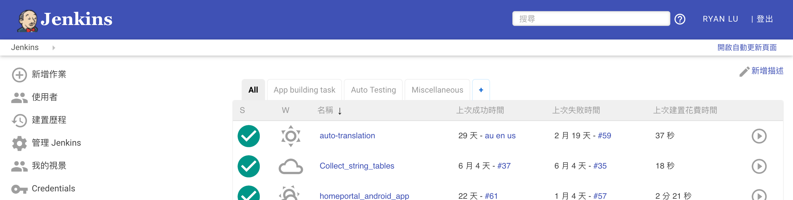
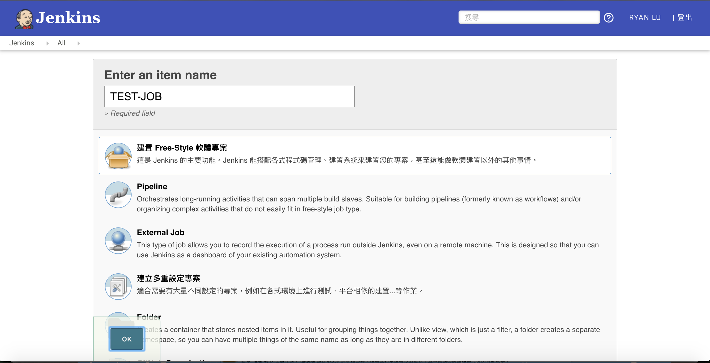
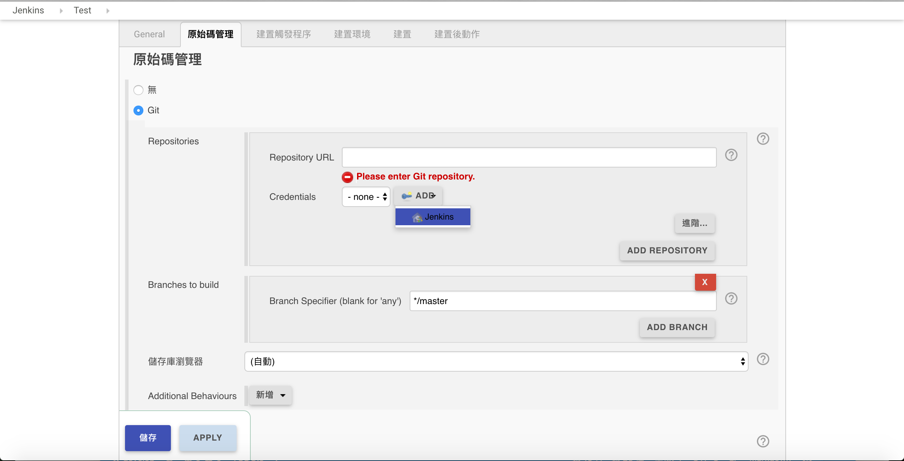
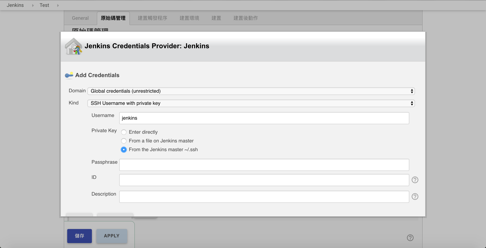
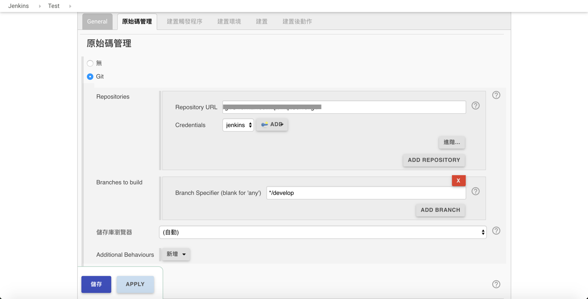
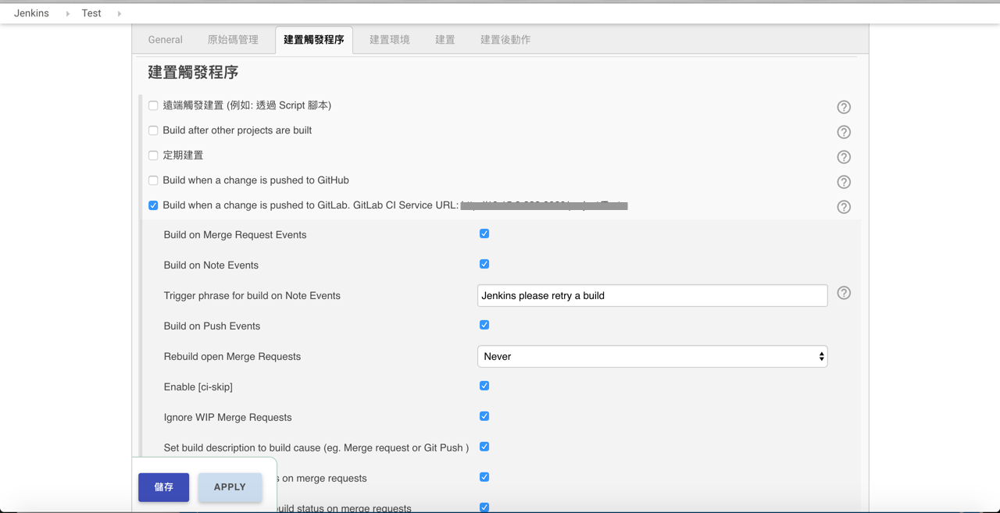
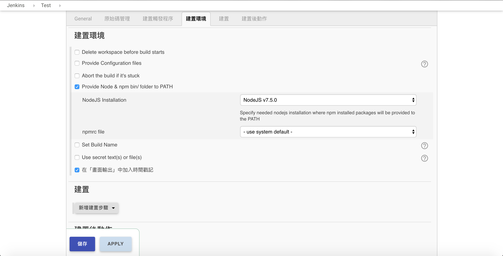
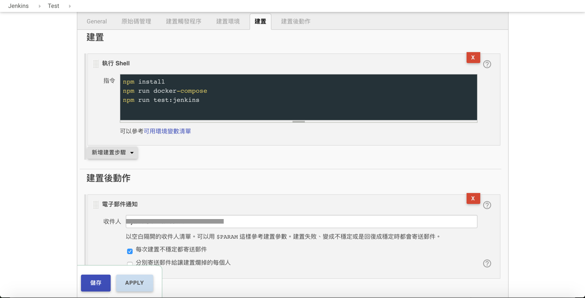

Click 新增作業

建置 free style 專案

原始碼管理 - Git
- Put private key in Crediential
- Put public key in gitlab
How to gen key
ssh-keygen -t rsa -C "test@climax.com.tw"
pub: cat ~/.ssh/id_rsa.pub
private: cat ~/.ssh/id_rsa
Add Credentials Keys

Domain: Global credentials (unrestricted)
Kind: SSH Username with private key
Username: jenkins
Privae Key: From the Jenkins master ~/.ssh

Set the repository URL and change the ssh key

Build Trigger

建置環境 (case by case)

建置和建置後動作 (case by case)
